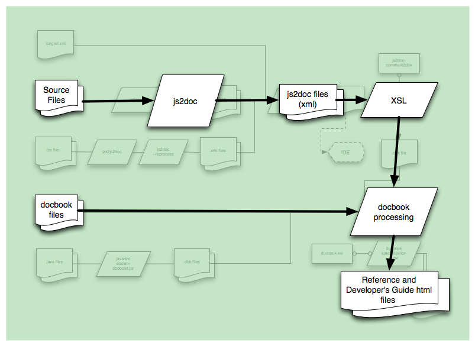
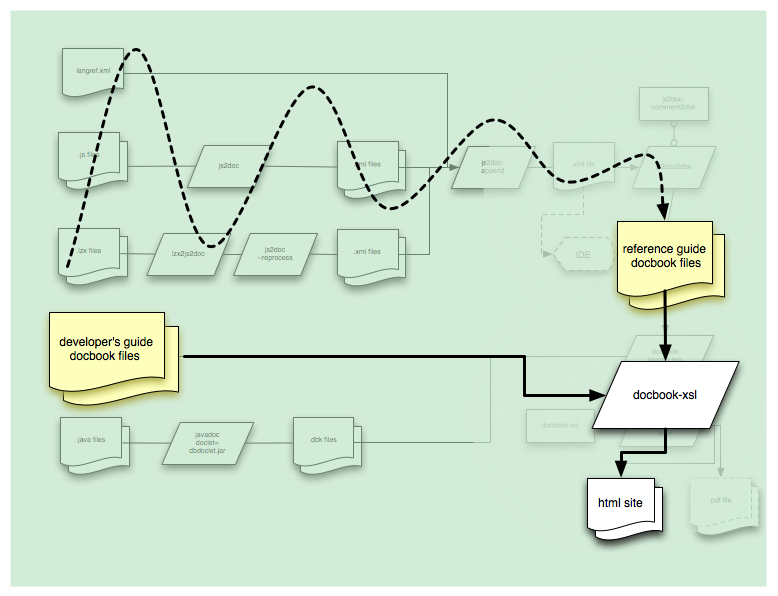
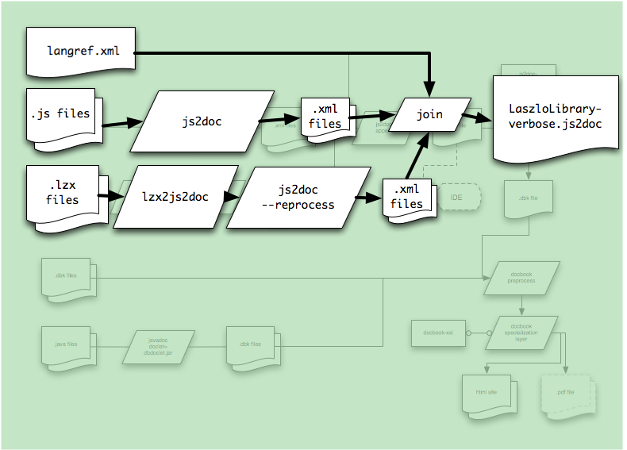
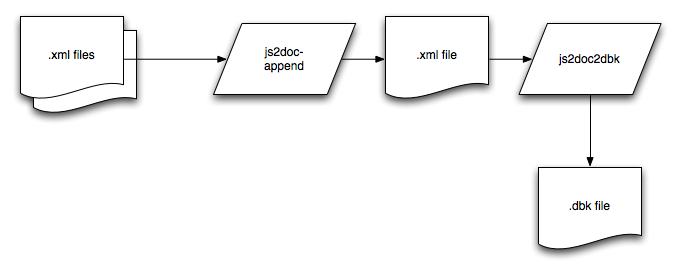
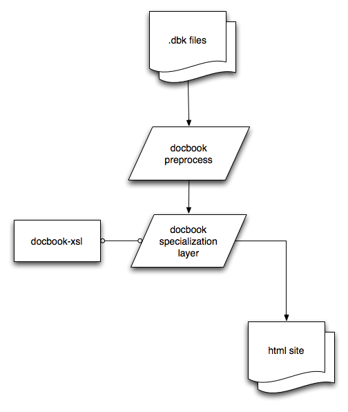
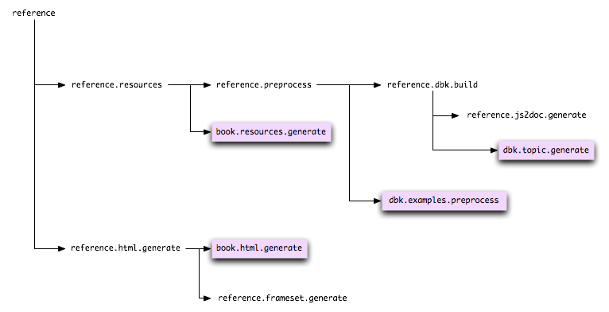
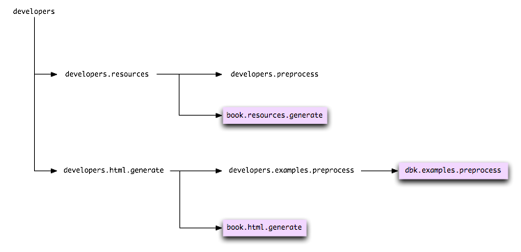

The documentation for OpenLaszlo, including this chapter of the developer's guide, is built with a federation of tools and technologies based on Java and XML. To understand the doc toolchain at all, you'll need to be comfortable with the fundamental concepts employed in XSLT 1.0 and ant. The toolchain is too complicated to understand all at once, as you can see from the figure below. This chapter will break it down into nearly-manageable chunks.
Some vocabulary will help you understand the diagram:
Think of this as the xml schema to describe JavaScript 2. The '2' in the term
js2doc refers to the version of javascript, not to a transformation.
"js2doc files" refers to a collection of xml files which follow the js2doc
schema.
Laszlo Foundation Classes. For the purposes of the documentation toolchain, the LFC consists of classes which are written in JavaScript.
The Developer's Guide, which you are reading, is a text about developing with OpenLaszlo. It is mostly written as sentences and paragraphs by human technical writers. The developer's guide is where one would look when trying to figure out how to improve startup performance, how to debug a live application, or why to choose a SOLO deployment.
The Reference Guide is a detailed reference manual of all of the public API's in
OpenLaszlo. It is where one would look to find out what methods are available on
drawview, or what events a button might
generate.
The term doc-comment is shorthand to refer to a special comment in a source file whose purpose is to document the nearby code.
With those definitions in mind, let's look at a simplified version of the rather intimidating diagram above:

Much better: two rows, unified in one final step. The top row is how we build the reference. The bottom row is how we build the developer's guide. The final transformation, labeled DocBook processing, turns intermediate files into the output html that you are probably reading right now.
The DocBook toolchain is long and complicated, and the builds take upwards of ten minutes, as much as 40 minutes for a complete build. Do not allow this slow debug-edit-compile loop to dictate the pace of your progress! This author found that it was very effective to work on well-formed subsets of the data, and transform those subsets through a driver stylesheet containing only the templates of interest. With this technique, a debug-edit-compile iteration can take seconds, not hours. The source code includes a simple driver, aptly named docs/src/xsl/simple-driver.xsl, which is currently configured to investigate methods of lz.Browser when applied to LaszloLibrary-verbose.js2doc.
A simpler way of figuring things out is just to run XPath queries against LaszloLibrary-verbose.js2doc Various XML editors support live XPath queries, including Oxygen XML Editor
Another way to understand the documentation toolchain centers on DocBook. Various processes create DocBook files, then a giant XSL transformation converts those DocBook files into output HTML. This diagram shows the whole process from this point of view:

The rest of this document is structured like the image above: first we describe how to get to DocBook files for the reference, then for the developer's guide; then we describe how to generate HTML output from the DocBook files. Finally, we'll consider the "backwards" transformation, tracing elements in an output page of the reference back to their origins in comments.
How do we build the reference? We build it from the source, of course. (Documentation that's not in the source will fall out of date as soon as it's written. Documentation in the source also tends to decay, but at least it's in the developer's field of view while he's editing the code.) This section will walk you through the processes which discover the documentation in various source materials, to an intermediate XML format which we call "js2doc", to the end project: the HTML reference manual.
The OpenLaszlo platform is heterogeneous, so our reference toolchain must accept several types of source as input: a basic language definition, JavaScript sources that implement the Laszlo Foundation Classes, and lzx sources that implement the lion's share of the application development classes. (For the purposes of this document, we'll ignore the Java API's for the parser, compiler, and servlet. Those elements use a well-known javadoc workflow.)
Let's look at that top row of the diagram above. In more detail, it becomes three rows, one for each variety of source code:

This part of the toolchain unifies the various source material into js2doc format, then
joins them together into a massive XML file, LaszloLibrary-verbose.js2doc.
To understand those processes, please review Section 8, “JS2Doc Schema” to grasp the kinds of
information that js2doc is trying to represent. The next three sections will walk through each
of the three paths in the diagram above: from langref.xml, from javascript code, and from lzx
source code, all to the js2doc intermediate format.
langref.xml is an xml file which documents the lzx language itself:
things like attribute tag, the class tag, the event and handler tags, and so on. Find it in
the source distribution at $LPS_HOME/docs/src/reference/langref.xml.
langref.xml is itself a js2doc file, so it doesn't need any processing to
go into the next phase (js2doc2dbk) of the reference toolchain. Consider the "method" tag. An example of a method tag would be the moveWindow method in the example in Section 4, “Methods”. We're not talking about documenting an instance of the method tag; rather, we're talking about documenting the method tag itself: Here's the js2doc fragment
describing the method tag:
<property id="tag.method" topic="LZX" subtopic="Basics" access="public">
<doc>
<tag name="shortdesc"><text>Attaches a function or event handler to an object or class.</text></tag>
<tag name="lzxname"><text>method</text></tag>
<text>
<p>Attaches a method to the object that contains this element. The
method must have a <attribute>name</attribute>.</p>
<p>The <attribute>name</attribute> attribute
allows the method to be invoked from JavaScript with this name.
For example, if a method is defined via:</p>
<example extract="false">
<view id="obj">
<method name="f" args="a, b">
return a+b;
</method>
</view>
</example>
<p>
then script code
can invoke <code>obj.f(1, 2)</code> to add two
numbers.</p>
</text>
</doc>
<class>
<property name="__ivars__" access="public">
<object>
<property name="name" modifiers="final">
<doc>
<tag name="lzxtype"><text>token</text></tag>
<text>The name of the method.</text>
</doc>
</property>
<property name="event" type="String">
<doc>
<text>The name of the event that this method is invoked in response
to.</text>
</doc>
</property>
<property name="reference" type="Object">
<doc>
<tag name="lzxdefault"><text>"this"</text></tag>
<tag name="lzxtype"><text>reference</text></tag>
<text>If this attribute is present, it is a JavaScript expression
that evaluates to an object. The code in this method executes
when this object sends the event named by the @a{event}
attribute. This attribute may be present only if
the @a{event} attribute is present too.</text>
</doc>
</property>
<property name="args" type="String" modifiers="final">
<doc>
<text>The parameter names of this method. The value of this attribute
is a comma-separated list of JavaScript identifiers.</text>
</doc>
</property>
</object>
</property>
</class>
</property>
Later in this document, we'll see how this js2doc intermediate fragment becomes the reference page for the method tag.
The LFC (Laszlo Foundation Classes) are written in JavaScript, and their documentation
is inline with their implementation. ??? is an example of
an LFC class. In javascript, comments are indicated with the javadoc-style comment,
beginning with a slash followed by two asterisks. Here's an example, from LaszloView.lzs
($LPS_HOME/WEB-INF/lps/lfc/views/LaszloView.lzs):
/**
* returns true if the point is contained within the view.
* @param Number x: an x value relative to the this view's coordinates
* @param Number y: an y value relative to the this view's coordinates
* @return Boolean: boolean indicating whether or not the point lies within the view
*/
function containsPt( x,y ) {
return (((this.height>= y) && (y >= 0)) &&
((this.width>= x) && (x >= 0)));
}
Turning those structured comments into the js2doc intermediate format is achieved by a
java application called (not very helpfully) js2doc. This application is found in the source
tree in WEB-INF/lps/server/src/org/openlaszlo/js2doc. It's
really quite clever: the js2doc tool uses exactly the same parsing code as the OpenLaszlo
script compiler. Instead of emitting swf bytecodes representing the class as
defined in the parsed javascript, js2doc emits an xml description of the API defined in the
parsed javascript -- complete with the comments embedded as
documentation!
This will make more sense when we look at the js2doc output from the containsPt code above:
<property id="LzView.prototype.containsPt" name="containsPt">
<doc>
<text>returns true if the point is contained within the view.</text>
</doc>
<function>
<parameter name="x" type="Number">
<doc>
<text>an x value relative to the this view's coordinates</text>
</doc>
</parameter>
<parameter name="y" type="Number">
<doc>
<text>an y value relative to the this view's coordinates</text>
</doc>
</parameter>
<returns type="Boolean">
<doc>
<text>boolean indicating whether or not the point lies within the view</text>
</doc>
</returns>
</function>
</property>
A note on id's: the id of a property in the js2doc structure is a globally-unique identifier. (At least, it is globally unique if the tools are all working correctly.) The form of the id is based on the semantics of the thing-it's-identifying. A few examples will clarify the patterns:
| Example id | Meaning | Comments | |
|---|---|---|---|
id="LzView" | The lz.view class | The use of capital "Lz" indicates that the class lz.view is part of the LFC. | |
id="LzView.prototype.containsPt" | The containsPt method of lz.view | The presence of prototype means that the property being identified is present on all instances of the class. The use of capital "Lz" indicates that the class lz.view is part of the LFC. | |
id="tag.method" | The method tag | The tag. prefix means that the class being identified is a tag, part of the language. | |
id="lz.basewindow" | The <basewindow> class | The prefix lz. means that the class being identified is a vanilla tag, not part of the LFC. | |
id="lz.basewindow.prototype.setWindowFocus" | The setWindowFocus method of the basewindow class | The presence of prototype means that the property being identified is present on all instances of the class. | |
id="lz.basewindow.__ivars__.minwidth" | The minwidth attribute of an instance of the basewindow class | The __ivars__ indicates that the property being identified is present on each individual instance of the basewindow class. | |
id="lz.Browser+dhtml" | the lz.Browser class, as it exists only in the dhtml runtime. | The +<runtime> suffix indicates runtime-specific behavior. | |
id="lz.Browser+swf8+swf9" | the lz.Browswer class, as it exists in the swf8, and swf9 runtimes. | Several runtimes can be appended to a class name to indicate that this behavior applies to all of the specified runtimes.. | |
id="services.platform.dhtml.LzKeys.js" | the file named LzKeys.js | This is an id for a <unit>, not a <property> and refers to a file, not an API element |
Throughout the entire toolchain, when you want to refer to a particular class, method, attribute, event, or file, you can specify it by id. For example, to link to the reference for the class basewindow, insert <xref linkend="lz.basewindow"/> which yields this result: ???
Most code which application developers write, and which contributors will examine, is lzx code. lzx is the language in which all of the components are described, all of the extensions, all of the utilities, and so forth. When you think about developing an OpenLaszlo application, you are probably thinking about writing lzx code.
The source for ???
(lps/components/base/basewindow.lzx) is a typical lzx file for which
the doctools generate documentation. In an lzx file, documentation comments are set apart by
beginning an XML comment with three hyphens, instead of the customary two. Chapter 57, JS2Doc Reference describes the available annotations within a doc comment in
lzx.
<!--- Brings the window to front when it has the
windowfocus and sets the 'state' to 2, the selected state.
Subclasses may override to create different behavior
@param Boolean windowfocus: whether the window should be selected
-->
<method name="setWindowFocus" args="windowfocus">This example shows the doc-comment for the method setWindowFocus of
the basewindow class. It indicates that there is a single parameter,
windowfocus which should be a Boolean.
lzx2js2doc processes commented lzx source files into js2doc intermediate files. It is an
xsl worksheet, $LPS_HOME/docs/src/xsl/lzx2js2doc.xsl, which discovers the
doc comments in the lzx source, parses them, and outputs js2doc files. The js2doc output for
the setWindowFocus method above looks like this:
<property id="lz.basewindow.prototype.setWindowFocus" name="setWindowFocus" access="public"> <function> <parameter name="windowfocus" type="Boolean"> <doc> <text>whether the window should be selected</text> </doc> </parameter> </function> <doc> <tag name="lzxname"> <text>setWindowFocus</text> </tag> <text>Brings the window to front when it has the windowfocus and sets the 'state' to 2, the selected state. Subclasses may override to create different behavior</text> </doc> </property>
(This fragment is in $LPS_HOME/docs/src/build/reference/LaszloLibrary-verbose.js2doc, an intermediate file generated by the reference build.)
So far, we've seen how the js2doc intermediate form is generated from various source files. The next step in the transformation is to build a DocBook representation of the reference material. Let's look at the detailed diagram for this transformation:

That looks simple and straightforward, with just one path through the transformation. Actually, this transformation is the most complicated part of the documentation toolchain. The complexity is all located within the js2doc2dbk XSL transformation.
Consider this step abstractly: From a large, structured set of information, construct another large, structured set of information. The linear order in which XSL transformations execute isn't really important, but it helps to think of this transformation procedurally. (XSL's functional programming style can be very intimidating; it helps to trace it through as if it were procedural.)
For each section of the reference, create a DocBook file to contain the reference DocBook content for that section.
(Sections are listed in docs/src/reference/index.dbk, and the section DocBook files are generated in
docs/src/build/reference/[lfcref.dbk|lzxref.dbk|compref.dbk|...].)
Identify the pages in that section.
For each page in the reference:
Describe the class by name, inheritance chain, and introductory text.
List all of the attributes for that class. Also list all of the inherited attributes for that class.
List all of the methods for that class. Also list all of the inherited methods for that class.
List all of the events for that class. Also list all of the inherited events for that class.
Now consider this step concretely. This is the core of the documentation toolchain, so it is worth investigating in detail. First you must learn to navigate and understand the important stylesheets, which is the subject of the next section, Section 3.4.1, “Reading js2doc2dbk Stylesheets”
The stylesheets in docs/src/xsl participate in all of the xsl transformations in the documentation toolchain: from lzx to js2doc, from js2doc to dbk, and from dbk to html (details on this later). When looking at a particular stylesheet, or looking for a particular template, it is useful to consider which stage of the transformation interests you.
Each xsl stylesheet begins by declaring several entities. These are XPath macros which make the templates that follow more succinct and hopefully readable. Take the time to read these over and grasp their meaning.
The main transformation lives in docs/src/xsl/js2doc2dbk.xsl, and within that, the main template for generating a complete reference page is <xsl:template match="property" mode="refentry">
docs/src/xsl/js2doc2dbk/synopsis.xsl
docs/src/xsl/js2doc2dbk/utilities.xsl
Modes and roles are attributes of xsl templates which provide another way to slice the same information, akin to double-dispatch: there are several ways to handle an element, and the appropriate one for a given moment depends both on the element (primary dispatch by XPath matching of the template) and on the current mode (secondary matching by mode). A single template may call other templates in various modes. This pattern is pervasive in the js2doc2dbk stylesheets, but it is not used much currently. It supports building multiple references from the same js2doc: different references for the swf runtime versus the dhtml runtime, different references for the public api's than for internal api's, and so on. In particular, the detailed-synopsis mode is unused.
generating warnings, errors, fixme's
Get a beverage and a comfortable chair, then turn off the phone and lock the door. The next section is the very heart of the reference toolchain, and understanding it requires holding a lot of context in your head all at once.
Let's look at the reference page for ???. The js2doc description of it is in docs/src/xsl/build/reference/LaszloLibrary-verbose.js2doc. Open that file and find the element describing lz.text. Copy that element into a smaller file so you can look at it in detail. The element describing the lz.text class begins with this line:
<property id="LzText" name="LzText" unitid="views.LzText.lzs" access="public" topic="LFC" subtopic="Text">
To find a particular item in the giant LaszloLibrary-verbose.js2doc file, just search for it by id. This works because id's are globally unique.
Notice that the containing element here is <property>. In js2doc, property is the element that represents a useful chunk of the api. This particular element describes everything there is to know about lz.text.
The main template for generating a page in the reference is in the file docs/src/xsl/js2doc2dbk.xsl. We can tell from the js2doc output below, and our knowledge of DocBook, that the output begins with a <refentry> tag, so we can find the template that generates it by searching js2doc2dbk.xsl for <refentry or by performing the equivalent XPath query: //refentry. This takes us to two templates, one that starts with
<xsl:template match="property" mode="refentry">and another that starts with
<xsl:template match="unit" mode="refentry">
We're trying to match a property tag, so the first of those templates is the one that will match.
The beginning of that template declares several variables and determines their values:
<xsl:variable name="jsname" select="@name"/>
<xsl:variable name="lzxname" select="&tagname;"/>
These lines establish variables named $jsname and $lzxname. For $jsname, select="@name" means "run the XPath query '@name' on the current node, and set the value of the $jsname variable to the result of that query." In your XML editor, run that query yourself; the result should be lz.text.
The declaration of $lzxname is more complicated, even though it looks just as simple as $jsname. Here we have select="&tagname;". That's a reference to an entity; find that entity's definition at the beginning of js2doc2dbk.xsl:
<!ENTITY tagname '(doc/tag[@name="lzxname"]/text)'>
Remember that entities are text substitutions, so after entity expansion, the lzxname declaration above would read:
<xsl:variable name="lzxname" select="(doc/tag[@name="lzxname"]/text)/>
That's an XPath query which means "find a child of the current node who has a child element of type tag who has an attribute name whose value is lzxname. Return the textual content of that tag node's child text node." Consulting the js2doc fragment for lz.text again, we can evaluate this query:
<property id="LzText" name="LzText" unitid="views.LzText.lzs" access="public" topic="LFC" subtopic="Text">
<doc>
<text>
<p>This class is used for non-editable text ....
</p>
</text>
<tag name="shortdesc">
<text>The basic text display element.</text>
</tag>
<tag name="devnote">
<text>This is for regular and input text.</text>
</tag>
<tag name="lzxname">
<text>text</text>
</tag>
...
So the value of $lzxname is "text".
The double meaning of "text" and "tag" here is unavoidable. Keep track of when we're talking about a domain concept -- lz.text, aka "text," is a concept in the OpenLaszlo domain -- and when we're talking about a tools concept -- the text value of an XML element.
Continuing our walkthrough of the main template for a reference entry in js2doc2dbk.xsl, skip over the next few variable declarations. Now we're at the first output instructions:
<refentry id="{$id-for-output}" xreflabel="{$desc}">
<xsl:if test="$lzxname"><anchor id="{concat('tag.',$lzxname)}"/></xsl:if>
...
$id-for-output was one of the variables we skipped over; experience reveals that $id-for-output evaluates to lz.text and that $desc evaluates to <text>. The next line says, "if the variable named $lzxname has a non-null value, output an <anchor> tag with an id of 'tag.' + $lzxname." For lz.text, we figured out above that $lzxname is text.
Now we can predict the DocBook output from this part of the template:
<refentry xreflabel="<text>" id="LzText">
<anchor id="tag.text"/>
To verify that's the output we'll get, look at the DocBook output for lz.text. If you've done a documentation build, the lz.text reference entry will be in docs/src/build/reference/lfcref.dbk. Open that file, and again find the lz.text section.
In DocBook files, the trick for finding a particular element is the same as in LaszloLibrary-verbose; just search for id="LzText"
<refentry xreflabel="<text>" id="LzText"> <anchor id="tag.text"/> <refnamediv> ... <refname role="javascript">LzText</refname> <refname role="lzx">text</refname> <refpurpose>The basic text display element.</refpurpose> </refnamediv> ...
See if you can find where the refnamediv element in the listing above come from.
A DocBook reference entry is a <refentry> tag. See the DocBook reference for refentry.
The DocBook output at this step is a semantic representation of the content we'll see on the output reference HTML pages. It is almost but not quite a listing of the words that will appear in the output HTML, with lots of semantic markup. The markup will give the final stage in the transformation (DocBook to html) information necessary to format the output nicely.
You can now open the door and turn your phone's ringer back on -- you're through the worst of it!
After all that, you may be relieved to learn that the developer's guide is far simpler. Chapters in the developer's guide are written as DocBook files directly, so no transformation is necessary to create DocBook files. The developer's guide DocBook files enter the docbook-xsl processing stage in the same conceptual role as do the reference guide DocBook files.
The last step in the transformation process is not as complicated as the preceding steps. This final step is mostly just the vanilla transformation of DocBook files to html files, using the vanilla docbook-xsl transformations. DocBook XSL: The Complete Guide by Bob Stayton is an excellent reference on this topic.
There are two ways in which the OpenLaszlo DocBook to html transformation differs from the standard docbook-xsl transformation:
Customizations to standard docbook-xsl templates, also known as the "DocBook customization layer." This is such a common pattern for customization that the DocBook-XSL book referenced above has a chapter about customizing DocBook. We customize the standard DocBook by specifying parameters in docs/src/xsl/parameters.xsl.
Inclusion of specially-formatted examples. DocBook includes the notion of program listings and embedded illustrations, but it doesn't know about live examples, or how to format lzx code, or how to emphasize parts of example listings. The step labeled "docbook-preprocess" in the diagram below represents some of this process, but the truth is more complicated.

common-html.xsl
conditional-html.xsl
styles.css
lzx-pretty-print.css
dguide.xsl
dbkpreprocessexamples.xsl
lzx-pretty-print.xsl
There is a copyright notice at the bottom of every dguide and reference page. This notice is generated during the DocBook transform by the template user.footer.content in the file common-html.xsl. To change to copyright date for all generated documents, change the date in this template.
The copyright notice for files that are not generated is entered manually.
There are several important directories for the documentation toolchain.
| Path | Ant Property | Purpose | Ships in binary distros |
|---|---|---|---|
$LPS_HOME/docs/src/xsl | (no associated property) | Holds the stylesheets that do the transformations | no |
$LPS_HOME/docs/src/developers | $developers.src.dir | Holds the source for the developer's guide | no |
$LPS_HOME/docs/src/build/developers | $developers.build.dir | Holds intermediate files for the developer's guide build | no |
$LPS_HOME/docs/developers | $developers.output.dir | Holds the output html for the developer's guide | yes |
$LPS_HOME/docs/src/reference | reference.src.dir | Holds the source for the reference | no |
$LPS_HOME/docs/src/build/reference | reference.build.dir | Holds intermediate files for the reference build | no |
$LPS_HOME/docs/reference | reference.output.dir | Holds the output html for reference | yes |
$LPS_HOME/WEB-INF/lps/server/src/org/openlaszlo/js2doc | (no associated property) | Contains the code for the js2doc java tool | no |
Here's that same information, organized hierarchically:
$LPS_HOME
docs
reference/ ($reference.output.dir)
developers/ ($developers.output.dir)
src/ ($docs.src.dir)
xsl/ (holds the xsl templates for both the conversion from lzx to js2doc, and from js2doc to DocBook)
developers/ ($developers.src.dir)
tutorials/
programs
images
programs
images
reference/ ($reference.src.dir)
images
resources
navbuilder/ command-line tool for building the left-nav in the reference
build/ (temporary) ($docs.build.dir)
js2doc/ (js2doc.build.dir) holds the initial js2doc output
developers/ ($developers.build.dir) where the processed developers guide DocBook files go after they've had the examples and callouts inserted
reference/ ($reference.build.dir) where the js2doc output is joined together into LaszloLibrary-verbose.js2doc, and where the processed reference guide DocBook files go after they've had the examples and callouts inserted
The build file in docs/src/build.xml is arguably the most complicated build file in the entire OpenLaszlo platform. It has several layers of abstraction, which, when combined with the doc toolchain's complexities we've already explored, make following the ant file nearly impossible. The way to make sense of the build file is to think of what we already have learned the process is, as described in the rest of this chapter. In this discussion, we'll favor concepts over details, lest we drown in details. You may also wish to try yWorks Ant Explorer which provides a visualization of the build file.
The build file is composed of both specific targets and parameterized targets. The parameterized targets do most of the work, and the specific targets set up the right parameters with which to call the parameterized targets. In Section 6.1, “Directory Structure”, the ant properties corresponding to particular directories in the LPS tree are listed; understanding those mappings is crucial to being able to read and follow the build.
In this diagram of the major targets in the reference build, parameterized targets are highlighted:

reference.js2doc.generate drives the creation of the js2doc intermediate file, LaszloLibrary-verbose.js2doc, from the several sources (langref.xml, lzx files, and js files).
dbk.topic.generate drives the js2doc2dbk transformation. It says, "find all the elements in the input file ( LaszloLibrary-verbose.js2doc for the reference) that match the topic specified in the filter.topic parameter. Apply the transformations in js2doc2dbk.xsl to those elements, and output the results to the file specified in the local.output.file."
book.html.generate drives the DocBook to HTML transformation.
dbk.examples.preprocess prepares the examples in the specified DocBook for rendering and final output, by running the DocBook through xsl/dbkpreprocessexamples.xsl.
This diagram shows the major targets in the developer's guide build. As before, parameterized targets are highlighted:
